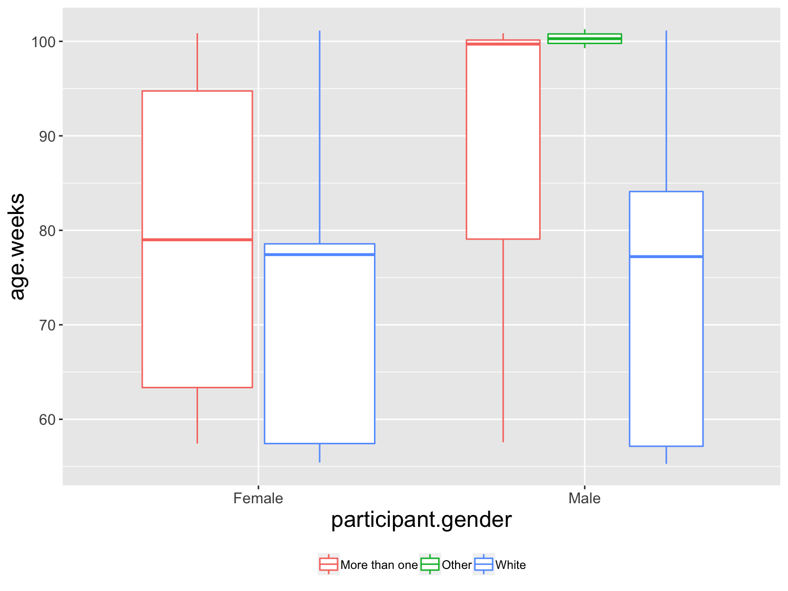

The 3 R’s of open science
Rick O. Gilmore
2018-10-16 15:17:31
Preliminaries


Themes
- Reproducibility
- Reproducible research with R and R Markdown
- Registered reports and pRe-registration
Reproducibility
Is there a reproducibility crisis?
- Yes, a significant crisis
- Yes, a slight crisis
- No crisis
- Don’t know


Studies are underpowered
“Assuming a realistic range of prior probabilities for null hypotheses, false report probability is likely to exceed 50% for the whole literature.”
Physics is hard

Psychology is harder


“…psychologists tend to treat other peoples’ theories like toothbrushes; no self-respecting individual wants to use anyone else’s.”
“The toothbrush culture undermines the building of a genuinely cumulative science, encouraging more parallel play and solo game playing, rather than building on each other’s directly relevant best work.”


What do we measure, what do we infer?
- Behaviors
- Brain/physiological states
- Thought processes, feelings, opinions, …


What do we mean by ‘reproducibility’?
Inferential reproducibility
- Same inferences from one or more studies or reanalyses
Results reproducibility
- Same results from independent study
Methods reproducibility
- Enough details about materials & methods recorded (& reported)
- Same results with same materials & methods
Why should we care?
- What’s true (where, when, for whom, and why)?
- What’s not?
Many Labs

Reproducibility Project: Psychology (RPP)
“…The mean effect size (r) of the replication effects…was half the magnitude of the mean effect size of the original effects…”
“…39% of effects were subjectively rated to have replicated the original result…”


If it’s too good to be true, it probably isn’t
Achieving methods reproducibility
- Data collection
- Cleaning
- Visualization
- Analysis
- Reporting
- Manuscript, talk, poster preparation

No one is irreplaceable, but we can all strive to be indispensible.
What’s your project’s ‘bus number’?
R-eproducible research with R, RStudio, and R Markdown
Why R?
- It’s fun
- It’s free
- Amaze your friends; dazzle your rivals
- Powerful data manipulation, plotting, analysis

Why RStudio?
- Integrated development environment (IDE) for R
- It’s free, open source
- Suitable for beginners and experts
- Integration with git version control and GitHub web repository
- Projects management: Keep projects separate

Reproducible workflows
- Scripted, automated = minimize human-dependent steps.
- Well-documented
- Kind to your future (forgetful) self
- Transparent to me & colleagues == transparent to others
# Import/gather data
# Clean data
# Visualize data
# Analyze data
# Report findings# Import data
my_data <- read.csv("path/2/data_file.csv")
# Clean data
my_data$gender <- tolower(my_data$gender) # make lower case
...# Import data
source("R/Import_data.R") # source() runs scripts, loads functions
# Clean data
source("R/Clean_data.R")
# Visualize data
source("R/Visualize_data.R")
...But my SPSS syntax file already does this
- Great! How are you sharing these files?
- (And how much would SPSS cost you if you had to buy it yourself?)
But I prefer {Python, Julia, Ruby, Matlab, …}
- Great! Let’s talk about R Markdown
Reproducible research with R Markdown
- Add-on package to R, developed by the RStudio team
- Combine text, code, images, video, equations into one document
- Render into PDF, MS Word, HTML (web page or site, slides, a blog, or even a book)
- R Markdown documentation; online tutorial; Mike Frank and Chris Hartgerink’s tutorial
- Similar to Mathematica notebooks, Jupyter notebooks
- R Markdown extends Markdown
R Markdown syntax
- List item 1
- List item 2
1. Numbered item
**Bold text** and *italicized text*
~~struck-through text~~
`Monospace font for code`
> Box quote
LaTex equations: $E=mc^2$
# Header 1
## Header 2- List item 1
- List item 2
- Numbered item
Bold text and italicized text struck-through text
Monospace font for code
Box quote
LaTex equations: \(E=mc^2\)

One tool to rule them all and in the R-ness, bind them.
Write reproducible papers/reports in R Markdown?
Mike Frank & Chris Hartgerink’s tutorial on GitHub.
Why write reproducible papers?
…To be right, to be reproducible, and to be efficient. There are more, but these are convincing to us. In more depth:
To avoid errors. Using an automated method for scraping APA-formatted stats out of PDFs, Nuijten et al. 2015 found that over 10% of p-values in published papers were inconsistent with the reported details of the statistical test, and 1.6% were what they called “grossly” inconsistent….
To promote computational reproducibility. Computational reproducibility means that other people can take your data and get the same numbers that are in your paper. Even if you don’t have errors, it can still be very hard to recover the numbers from published papers because of ambiguities in analysis.
To create spiffy documents that can be revised easily. …At least one of us used to tweak tables and figures by hand constantly, leading to a major incentive never to rerun analyses because it would mean re-pasting and re-illustratoring all the numbers and figures in a paper…
Ways to use R Markdown
Ways to use R Markdown
{kind=link}
The future of R-reproducible workflows
# Login to Databrary
databraryapi::login_db("rogilmore@psu.edu")
# Download data
# Process datalego_vol <- 563
databraryapi::list_volume_metadata(lego_vol) %>%
kable()| id | name | owners | permission | doi |
|---|---|---|---|---|
| 563 | LEGO | Adolph, Karen; Tamis-LeMonda, Catherine | 4 | NA |
# Plot demographic data
databraryapi::summarize_demog(lego_vol)
play_pilot_vol <- 444
session_id <- 18825
databraryapi::list_assets_in_session(session.id = session_id,
vol.id = play_pilot_vol) %>%
select(., asset.name, permission, size) %>%
kable()| asset.name | permission | size |
|---|---|---|
| NYU-019-survey-demog | 5 | 18310 |
| S#19_DecibelData | 5 | 880044 |
| S#19_House Map.mov | 5 | 128407155 |
| S#19_Dyadic Play.mov | 5 | 170298675 |
| S#19_Solitary Play.mov | 5 | 42970367 |
| S#19_1-Hour.mov | 5 | 2958618399 |
| S#19_Questionnaires.mp4 | 5 | 1758919170 |
| S#19_Solitary&Dyadic Play (Experimenter).mov | 5 | 337009013 |
| S#19_1-Hour (Experimenter).mov | 5 | 2106349637 |
| S#19_House Map (Experimenter).mov | 5 | 352815199 |
| S#19_Phone Questionnaire.mov | 5 | 111188798 |
Report on PLAY pilots and LEGO data
rmarkdown::render('PLAY-LEGO-report.Rmd',
params = list(db_account = "rogilmore@psu.edu"))
But my advisor prefers MS Word…
rmarkdown::render('PLAY-LEGO-report.Rmd',
params = list(db_account = "rogilmore@psu.edu"),
output_format = "word_document")Key points
- Databrary API returns video/audio segments
- Video/audio segments can be extracted automatically from a Datavyu file
- (Soon) export updated Datavyu file with Databrary URIs
- R Markdown document can render code in other languages, including Python, bash, Octave, Julia, Haskell, JavaScript, …)
- Same input -> multiple output formats
Data repositories as “platforms for discovery”
- R Markdown documents (and Jupyter notebooks) provide self-documenting records
- Separate data (needing protection/restriction) from analysis code
- Curate your data once (for future sharing), use it many times
- Send colleagues/collaborators URIs for specific clips without having to do any video editing
Learning more about R Markdown

Registered reports and pre-registration
What


Why
- Nosek: “Don’t fool yourself”
- Separate confirmatory from exploratory analyses
- Confirmatory (hypothesis-driven): p-hacking matters
- Exploratory: p-values hard(er) to interpret
How/where


Skeptics and converts
- Susan Goldin-Meadow (skeptic), “Why pregistration makes me nervous”
- Mike Frank (former skeptic, now advocate), “Pregister everything”
(Pre)registration and video-based discovery science
- Code development & refinement: Exploratory
- Coding & analysis: Confirmatory
Psychological science can lead the development of robust and reproducible research practices
Ossmy, Gilmore, & Adolph (in press)

“The advancement of detailed and diverse knowledge about the development of the world’s children is essential for improving the health and well-being of humanity…”
SRCD Task Force on Scientific Integrity and Openness
“We regard scientific integrity, transparency, and openness as essential for the conduct of research and its application to practice and policy…”
SRCD Task Force on Scientific Integrity and Openness
“…the principles of human subject research require an analysis of both risks and benefits…such an analysis suggests that researchers may have a positive duty to share data in order to maximize the contribution that individual participants have made.”

This talk was produced on 2018-10-16 15:17:33 in RStudio 1.1.453 using R Markdown and the reveal.JS framework. The code and materials used to generate the slides may be found at https://github.com/gilmore-lab/2018-10-15-nyu/. Information about the R Session that produced the slides is as follows:
## R version 3.5.1 (2018-07-02)
## Platform: x86_64-apple-darwin15.6.0 (64-bit)
## Running under: macOS Sierra 10.12.6
##
## Matrix products: default
## BLAS: /System/Library/Frameworks/Accelerate.framework/Versions/A/Frameworks/vecLib.framework/Versions/A/libBLAS.dylib
## LAPACK: /Library/Frameworks/R.framework/Versions/3.5/Resources/lib/libRlapack.dylib
##
## locale:
## [1] en_US.UTF-8/en_US.UTF-8/en_US.UTF-8/C/en_US.UTF-8/en_US.UTF-8
##
## attached base packages:
## [1] stats graphics grDevices utils datasets methods base
##
## other attached packages:
## [1] knitr_1.20 forcats_0.3.0
## [3] stringr_1.3.1 dplyr_0.7.6
## [5] purrr_0.2.5 readr_1.1.1
## [7] tidyr_0.8.1 tibble_1.4.2
## [9] ggplot2_3.0.0 tidyverse_1.2.1
## [11] databraryapi_0.1.3.9006 revealjs_0.9
##
## loaded via a namespace (and not attached):
## [1] tidyselect_0.2.4 haven_1.1.2 lattice_0.20-35 colorspace_1.3-2
## [5] htmltools_0.3.6 yaml_2.2.0 rlang_0.2.2 pillar_1.3.0
## [9] glue_1.3.0 withr_2.1.2 modelr_0.1.2 readxl_1.1.0
## [13] bindrcpp_0.2.2 bindr_0.1.1 plyr_1.8.4 munsell_0.5.0
## [17] gtable_0.2.0 cellranger_1.1.0 rvest_0.3.2 devtools_1.13.6
## [21] memoise_1.1.0 evaluate_0.11 labeling_0.3 curl_3.2
## [25] highr_0.7 broom_0.5.0 Rcpp_0.12.18 scales_1.0.0
## [29] backports_1.1.2 jsonlite_1.5 hms_0.4.2 digest_0.6.16
## [33] stringi_1.2.4 keyring_1.1.0 grid_3.5.1 rprojroot_1.3-2
## [37] cli_1.0.0 tools_3.5.1 magrittr_1.5 lazyeval_0.2.1
## [41] crayon_1.3.4 pkgconfig_2.0.2 xml2_1.2.0 lubridate_1.7.4
## [45] assertthat_0.2.0 rmarkdown_1.10 httr_1.3.1 rstudioapi_0.7
## [49] R6_2.2.2 nlme_3.1-137 compiler_3.5.1